import numpy as np
import matplotlib.pyplot as plt
import torch
import torch.nn.functional as Fx0 = -5 # "realistic" sample which the model needs to learn to generate
n_steps = 100 # number of denoising time stepsalphas = 1. - torch.linspace(0.001, 0.2, n_steps)
alphas_cumprod = torch.cumprod(alphas, axis=0)
sqrt_alphas_cumprod = torch.sqrt(alphas_cumprod)
sqrt_one_minus_alphas_cumprod = torch.sqrt(1 - sqrt_alphas_cumprod ** 2)plt.plot(sqrt_alphas_cumprod, label="sqrt_alphas_cumprod")
plt.plot(sqrt_one_minus_alphas_cumprod, label="sqrt_one_minus_alphas_cumprod")
plt.legend()
plt.show()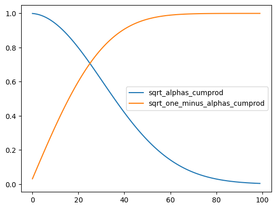
def q_sample(x_0, t, noise):
"""
Sample x at time t given the value of x at t=0 and the noise
"""
return sqrt_alphas_cumprod.gather(-1, t) * x_0 + sqrt_one_minus_alphas_cumprod.gather(-1, t) * noisefor t in [1, n_steps // 10, n_steps // 2, n_steps - 1]:
noised_x = q_sample(x0, torch.tensor(t), torch.randn(1000))
plt.hist(noised_x.numpy(), bins=100, alpha=0.5, label=f"t={t}");
plt.legend()
plt.show()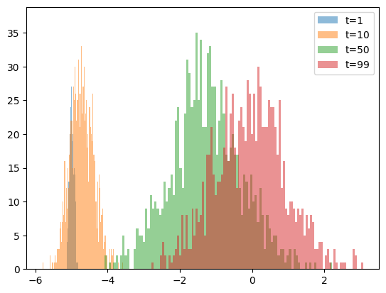
res = [(t, q_sample(x0, torch.tensor(t), torch.randn(1)).item()) for _ in range(10) for t in range(n_steps)]
x, y = list(zip(*res))
plt.scatter(x, y, s=1)
plt.xlabel("time")
plt.ylabel("x")
plt.show()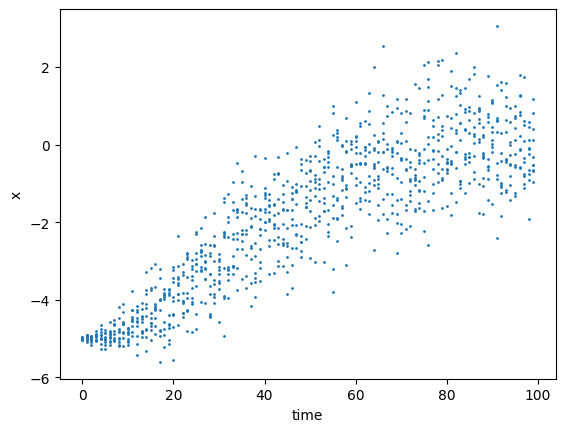
class DenoiseModel(torch.nn.Module):
def __init__(self):
super().__init__()
self.a = torch.nn.Parameter(torch.tensor(1.))
self.b = torch.nn.Parameter(torch.tensor(0.))
self.c = torch.nn.Parameter(torch.tensor(0.))
def forward(self, x, t):
return self.a * x + self.b * t + self.cdef p_loss(x, t):
# Generate a noise
noise = torch.randn(t.shape)
# Compute x at time t with this value of the noise - forward process
noisy_x = q_sample(x, t, noise)
# Use our trained model to predict the value of the noise, given x(t) and t
noise_computed = denoise(noisy_x, t)
# Compare predicted value of the noise with the actual value
return F.mse_loss(noise, noise_computed)denoise = DenoiseModel()
optimizer = torch.optim.Adam(denoise.parameters())
n_epochs = 10000
batch_size = 1000
for step in range(n_epochs):
optimizer.zero_grad()
t = torch.randint(0, n_steps, (batch_size, )) # Pick random time step
loss = p_loss(x0, t)
loss.backward()
if step % (n_epochs // 10) == 0:
print(f"loss={loss.item():.4f}; a={denoise.a.item():.4f}, b={denoise.b.item():.4f}, c={denoise.c.item():.4f}")
optimizer.step()
print(f"final: loss={loss.item():.4f}; a={denoise.a.item():.4f}, b={denoise.b.item():.4f}, c={denoise.c.item():.4f}")loss=6.8079; a=1.0000, b=0.0000, c=0.0000
loss=0.8066; a=0.3559, b=-0.0051, c=0.6867
loss=0.6017; a=0.2857, b=-0.0111, c=0.9890
loss=0.5779; a=0.3448, b=-0.0148, c=1.3242
loss=0.4834; a=0.4283, b=-0.0207, c=1.7765
loss=0.3883; a=0.5261, b=-0.0272, c=2.3132
loss=0.3561; a=0.6265, b=-0.0345, c=2.8685
loss=0.3245; a=0.7181, b=-0.0406, c=3.3752
loss=0.3049; a=0.7881, b=-0.0455, c=3.7749
loss=0.2931; a=0.8409, b=-0.0488, c=4.0181
final: loss=0.2886; a=0.8581, b=-0.0503, c=4.1364alphas_cumprod_prev = F.pad(alphas_cumprod[:-1], (1, 0), value=1.0)
posterior_variance = (1 - alphas) * (1. - alphas_cumprod_prev) / (1. - alphas_cumprod)
def p_sample(x, t):
"""
One step of revese process sampling - Algorithm 2 from the paper
"""
alpha_t = alphas.gather(-1, t)
sqrt_one_minus_alphas_cumprod_t = sqrt_one_minus_alphas_cumprod.gather(-1, t)
# Get mean x[t - 1] conditioned at x[t] - see eq. (11) in the paper
model_mean = torch.sqrt(1.0 / alpha_t) * (x - (1 - alpha_t) * denoise(x, t) / sqrt_one_minus_alphas_cumprod_t)
# Get variance of x[t - 1]
model_var = posterior_variance.gather(-1, t)
# Samples for the normal distribution with given mean and variance
return model_mean + torch.sqrt(model_var) * torch.randn(1)plt.figure(figsize=(10, 10))
for _ in range(5):
x_gens = []
x_gen = torch.randint(-50, 50, (1,))
for i in range(n_steps - 1, 0, -1):
x_gen = p_sample(x_gen, torch.tensor(i))
x_gens.append(x_gen.detach().numpy()[0])
plt.plot(x_gens[::-1])
plt.hlines(x0, 0, 100, color="black", linestyle="--", label=f"x0 = {x0}")
plt.legend(loc="upper left")
plt.title("Reverse process - denoising")Text(0.5, 1.0, 'Reverse process - denoising')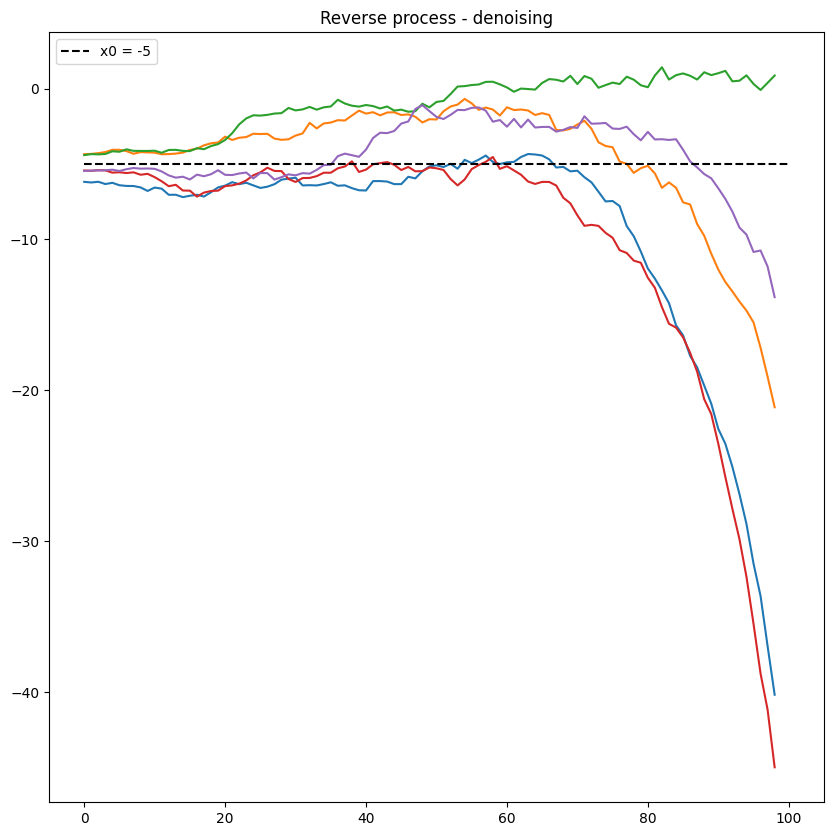
# Create a sample of 10000 "noisy" datapoint at time t = 100
x_gen = torch.randint(-100, 100, (10000,))
for i in range(n_steps - 1, 0, -1):
# denoise the sample step by step backawards in time
x_gen = p_sample(x_gen, torch.tensor(i))
if i % 10 == 0:
plt.hist(x_gen.detach().numpy(), range=(-100, 100), bins=100)
plt.show()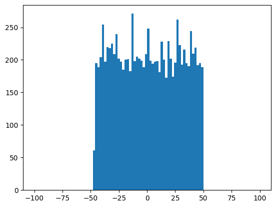
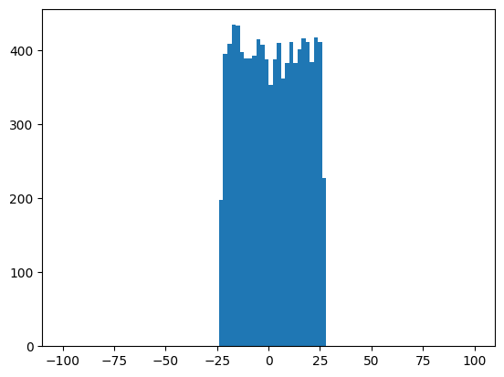
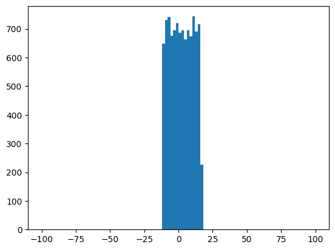
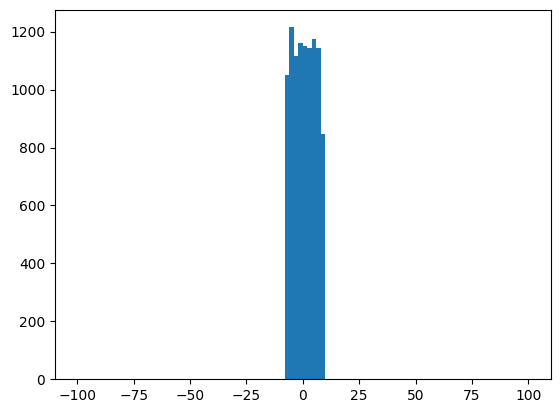
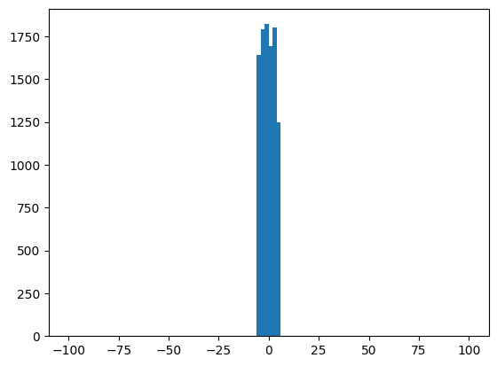
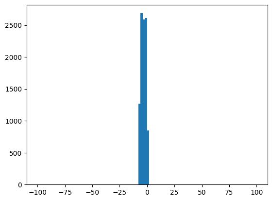
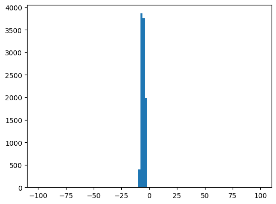
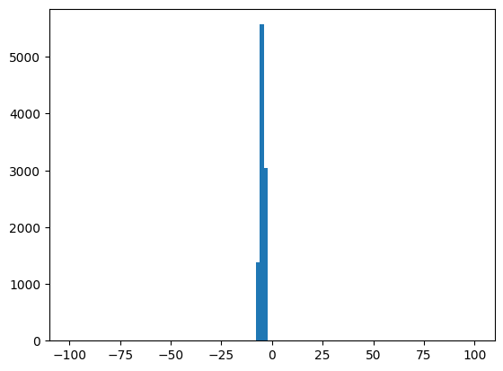
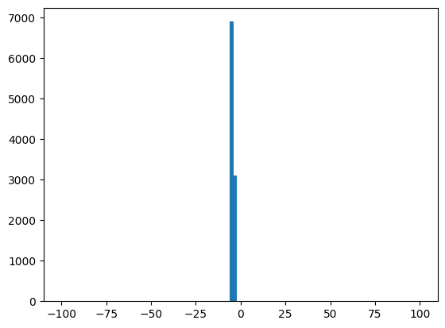
from collections import defaultdict
x_scale = 4 # Range of x to plot
all_res = []
for t0 in range(n_steps): # Go over all time steps and over x in a certain range
res = defaultdict(list)
for x in np.linspace(-x_scale, x_scale, 10):
noise_size = 1000
# Generate noise and apply it to x to get "noisy" x
noise = torch.randn((noise_size, 1))
t = torch.tensor((t0,))
noisy_x = q_sample(x0, t, noise)
bin_size = 0.01
# Group data by "noisy" x and compute average value of noise for a given "noisy" x
noisy_quantised = ((noisy_x[:, 0] / bin_size).round() * bin_size).numpy()
for i in range(noise_size):
res[noisy_quantised[i]].append(noise[i, 0].item())
averaged = {k: np.mean(res[k]) for k in res}
x_noisy = list(averaged.keys())
for k in averaged:
all_res.append([t0, k, averaged[k]])def get_noise(x_noisy, x0, t):
return (x_noisy - x0 * sqrt_alphas_cumprod[t]) / sqrt_one_minus_alphas_cumprod[t]plt.figure(figsize=(10, 10))
for t in range(0, n_steps, n_steps // 5):
all_fixed_t = [val for val in all_res if val[0] == t]
x_axis = [val[1] for val in all_fixed_t]
plt.plot(x_axis, [val[2] for val in all_fixed_t], label=f"simulated noise for t={t:.2f}", linestyle="-", alpha=0.5)
computed_noise = [get_noise(val[1], x0, t) for val in all_fixed_t]
plt.plot(x_axis, computed_noise, label=f"computed noise for t={t:.2f}", linestyle=":")
plt.legend(loc="lower right")<matplotlib.legend.Legend at 0x18b1b5e04d0>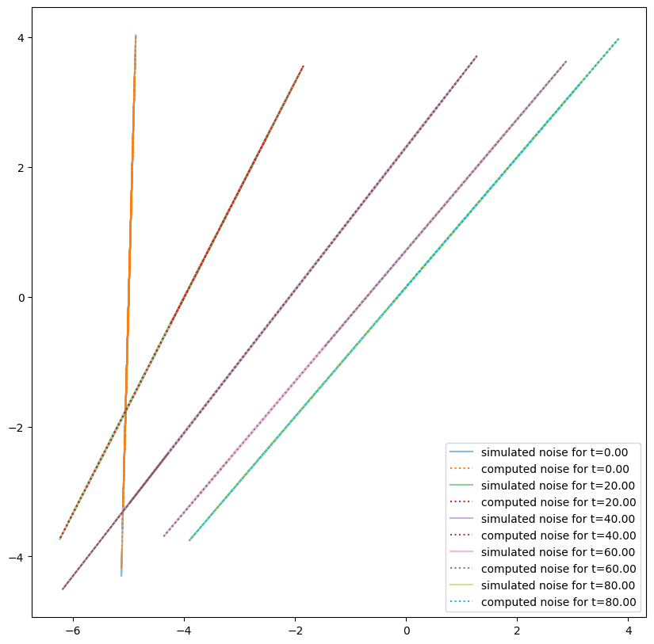
possible_noisy_x = sorted(set([val[1] for val in all_res]))
plt.figure(figsize=(10, 10))
for x_fixed in possible_noisy_x[::n_steps]:
all_fixed_x = [x for x in all_res if np.abs(x[1] - x_fixed) < 1e-8]
x_axis = [val[0] for val in all_fixed_x]
plt.plot(x_axis, [val[2] for val in all_fixed_x], label=f"simulated noise for x={x_fixed:.2f}", linestyle="-")
computed_noise = [get_noise(x_fixed, x0, val[0]) for val in all_fixed_x]
plt.plot(x_axis, computed_noise, label=f"computed noise for x={x_fixed:.2f}", linestyle=":")
plt.legend(loc="upper right")<matplotlib.legend.Legend at 0x18b1b9a35d0>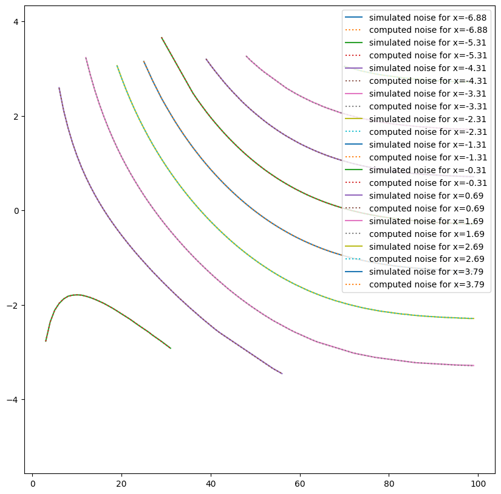